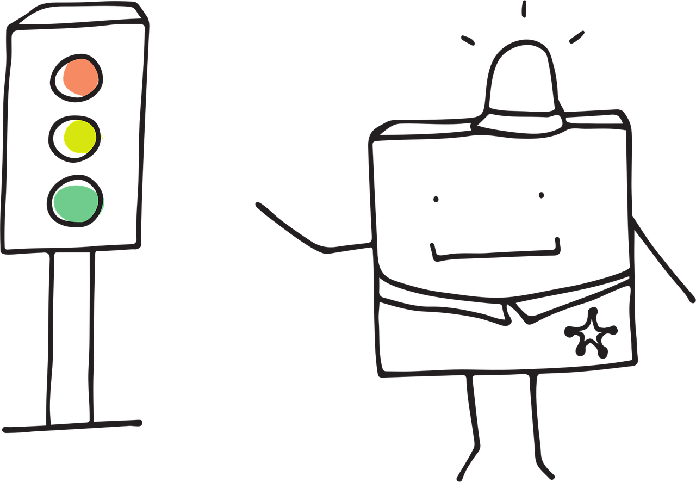

mindmap
root((Regression
Analysis)
Continuous <br/>Outcome Y
Discrete <br/>Outcome Y
Continuous Cuisine
After the introduction to this textbook on dynamics in Chapter 1 and the refresher on the fundamentals of probability and statistical inference provided in Chapter 2, we have divided the subsequent thirteen core chapters into two major sections: continuous outcomes and discrete outcomes. This division is based on insights from 1.2.4 Data Modelling regarding the data modelling stage of the data science workflow. It indicates that we must choose an appropriate regression model considering the following factors: response type (i.e., the type of outcome), flexibility, and interpretability. Therefore, regarding response type, it is convenient for the efficient use of this textbook to group these two major types of outcomes. Note that the diagram in Figure 1 will continue to evolve as we progress through our regression journey in these areas.
At the beginning of each of the thirteen core chapters, we will include useful recommendations on when to use and when not to use each model. These guidelines will be beneficial during the data modelling stage, helping us choose the suitable regression model based on our inquiries and data conditions. It is essential to note that these guidelines will also address the modelling assumptions that each model makes during the estimation stage. These assumptions must always be verified through the corresponding goodness of fit stage, as discussed in 1.2.6 Goodness of Fit. Additionally, when outlining situations in which a specific model should not be used, we will provide alternative modelling approaches, drawing on both further chapters and external resources.

Let us begin with what we refer to as “continuous cuisine” in this textbook. This category includes all regression models that have a continuous outcome denoted by \(Y\) (note the uppercase, as our estimation methods will treat it as a random variable). In real-life situations, we often deal with continuous outcomes of interest, which we aim to model using regression analysis conditioned on observed explanatory variables (the \(x\) regressors). In the statistical literature, specific regression techniques are tailored to the characteristics and distribution of the continuous outcome (or random variable) as outlined in 2.1.3 The Random Variables.
Chapter 3 begins with the classic Ordinary Least-squares (OLS) regression model, which is designed to formally model outcomes that are well-behaved and unbounded through linear relationships with respect to the regressors. It also assumes that the residuals are normally distributed with a common variance (i.e., homoscedasticity) to address inferential inquiries, a condition that extends to the \(Y\) responses. OLS is the foundational model in regression analysis, and its primary estimation method involves minimizing the squared errors between the observed outcomes in the training dataset and their corresponding in-sample predictions (calculated using the observed regressors and a mathematically determined set of estimated regression parameters).
Real-life continuous outcomes are not always unbounded, which means that a regression model like OLS may not be the most suitable option for modelling a given outcome \(Y\) under these circumstances. When responses are strictly positive and skewed (for example, customer purchases in an online store) the assumptions underlying OLS are violated. This is because OLS assumes normality, and the probability distribution in this case is unbounded and asymmetrical (refer to E.6 Normal). In such situations, Gamma regression becomes a useful alternative, as it operates under the assumption that \(Y\) follows a Gamma distribution. The Gamma distribution is well-suited for modelling responses because its support accommodates nonnegativity and skewness (see E.4 Gamma). The details of the corresponding regression model are elaborated in Chapter 4, where it is classified as a generalized linear model (GLM).
Definition of generalized linear models
An umbrella of regression approaches that model the conditional expected value of the response variable \(Y\) based on a set of observed regressors \(x\). Unlike a traditional model such as the continuous OLS that relies solely on a Normal distribution to make inference, GLMs extend this distributional assumption, allowing for a variety of probability distributions for the response variable. Note that this umbrella encompasses approaches that accommodate continuous or discrete responses \(Y\). According to Casella and Berger (2024), a typical GLM consists of three key components:
- Random Component: The response variables in a training dataset of size \(n\) (i.e., the random variables \(Y_1, Y_2, \ldots, Y_n\)) are statistically independent but not identically distributed. Still, they do belong to the same family of probability distributions (e.g., Gamma, Beta, Poisson, Bernoulli, etc.).
- Systematic Component: For the \(i\)th observation, this component depicts how the \(k\) regressors \(x_{i, j}\) (for \(j = 1, 2, \ldots, k\)) come into the GLM as a linear combination involving \(k + 1\) regression parameters \(\beta_0, \beta_1, \ldots, \beta_k\). This relationship is expressed as
\[ \eta_i = \beta_0 + \beta_1 x_{i, 1} + \beta_2 x_{i, 2} + \ldots + \beta_k x_{i, k}. \]
- Link Function: This component connects (or “links”) the systematic component \(\eta_i\) with the mean of the random variable \(Y_i\), denoted as \(\mu_i\). The link function is mathematically represented as
\[ g(\mu_i) = \eta_i. \]
Nelder and Wedderburn (1972) introduced this umbrella term called GLM in the statistical literature and identified a set of distinct statistical models that shared the above three components.
In other situations, the outcome \(Y\) is bounded between \(0\) and \(1\), meaning it represents a proportion. For instance, we may need to model the fraction of a monetary budget allocated for a specific purpose or the share of time spent on a particular activity, all of which depend on a given set of observed regressors \(x\). In these cases, Beta regression (a model discussed in Chapter 5) is a suitable modelling approach. It effectively addresses the bounded nature of proportions via the Beta distribution (see E.7 Beta) and allows for the assumption of heteroscedasticity (that is, different variances across all our training data points).
To wrap up this continuous zone, we encounter situations where we need to model the “time until an event of interest.” This includes scenarios such as the time \(Y\) until an equipment fails in a manufacturing facility, the time \(Y\) until a customer decides to churn, or the survival time \(Y\) of a patient. Each of these outcomes may depend on a specific set of observed variables \(x\). Similar to Gamma regression, we are still modelling a nonnegative continuous outcome. However, this type of regression extends beyond GLMs and falls under a statistical field known as survival analysis. Survival analysis utilizes additional probabilistic tools relevant to a random variable \(Y\), including the cumulative distribution function, survival function, and hazard function. This textbook approaches survival models in the following ways:
- Parametric Survival Modelling: Chapter 6 focuses on this category of survival models, where we assume a specific distribution for the survival time \(Y\) that we are interested in. This includes distributions such as the Exponential (as in E.3 Exponential), Weibull (as in E.1 Weibull), and Lognormal (as in E.2 Lognormal).
- Semiparametric Survival Modelling: Chapter 7 examines this category of survival models, with a specific emphasis on the Cox Proportional-Hazards model. This model offers greater flexibility by not enforcing a specific form on a part of the hazard function for \(Y\).
Definition of semiparametric model
A semiparametric model is a statistical model that incorporates both parametric and nonparametric parts. In the context of linear regression, these parts can be described as follows:
- The parametric part includes the systematic component where \(k\) observed regressors \(x\) are modelled along with \(k + 1\) regression parameters \(\beta_0, \beta_1, \ldots, \beta_k\) in a linear combination.
- The nonparametric part does not impose specific assumptions on one or more modelling components, allowing the observed training dataset to estimate these elements without requiring any probability distributions.
All the regression techniques discussed above make up what we refer to as the “continuous cuisine” of this textbook. The primary purpose of organizing this major section is to help you identify the most suitable technique for your continuous outcome variable \(Y\), while also examining how the training data behaves descriptively. This understanding will guide you in making informed decisions about your data modelling assumptions, particularly with respect to the characteristics of the previously mentioned probability distributions, especially in the context of parametric regression models. In the five chapters that follow, we will illustrate how each regression model incorporates its specific assumptions while also highlighting its limitations.